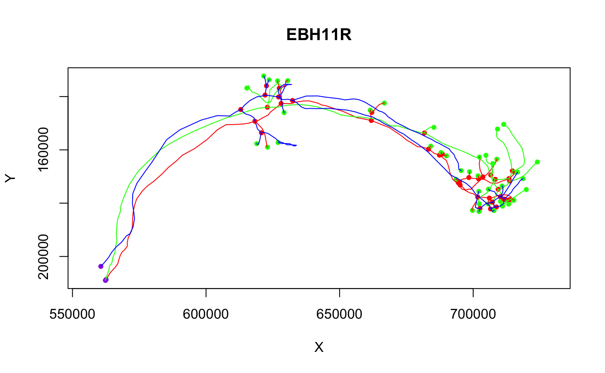
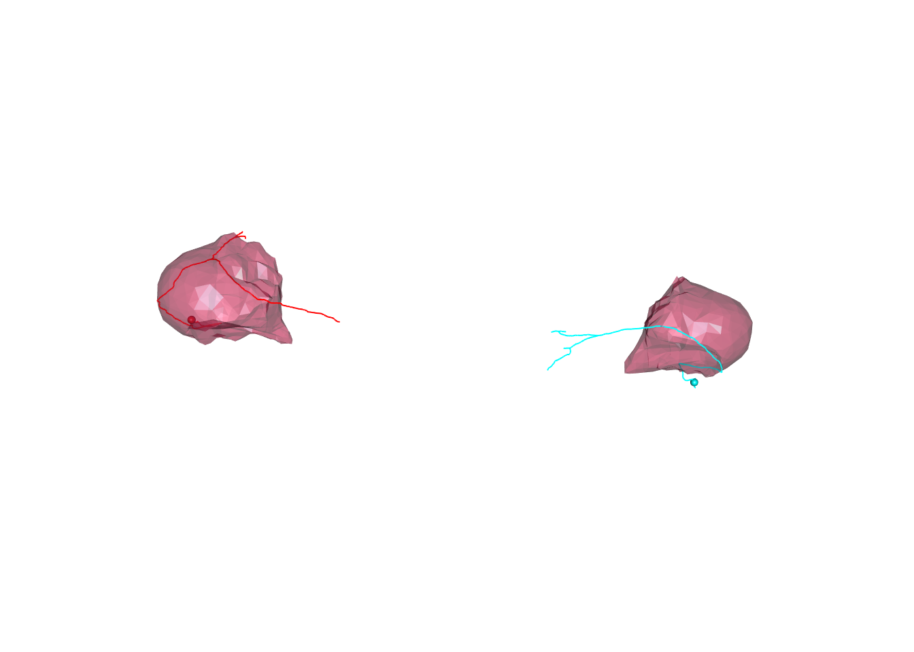

Transforming between FAFB and light level template brains
Gregory Jefferis
2017-09-02
Intro
In combination with several other nat packages, elmr allows you to convert 3D objects (skeletons, surfaces, images) between FAFB EM space and a number of light level template brains.
Setup
In order to run some of the examples we need to ensure that we have CMTK available and the nat.flybrains package fully installed to provide bridging registrations. We will make some of our examples run conditionally based on this.
full.bridging=FALSE
library(nat)
if(!nzchar(cmtk.bindir())){
cat("CMTK not available! Some examples will not run.")
} else {
djrok=try(nat.flybrains::download_jefferislab_registrations())
if(inherits(djrok, "try-error"))
cat("Unable to download bridging registrations! Some examples will not run.")
else full.bridging=TRUE
}
# set up for 3d plots based on rgl package
rgl::setupKnitr()
# frontal view
view3d(userMatrix=rgl::rotationMatrix(angle = pi, 1,0,0), zoom=0.6)Example - 3D locations
As our first example, we take the position of the centre of the left and right olfactory V glomeruli (CO2 responsive). We transform these from JFRC2013 to FAFB13 space.
library(elmr)
vgloms.jfrc2013=data.frame(X=c(316,229),
Y=c(143, 139),
Z=c(26,22),
row.names=c("V_L", "V_R"))
# Convert to FAFB13 coordinates
xform_brain(vgloms.jfrc2013, sample = JFRC2013, reference = FAFB13)## X Y Z
## V_L 653365.8 370558.5 53617.75
## V_R 538142.7 358119.3 55979.34Neurons
Our second example converts some neurons from a light level space other than JFRC2013 to FAFB, making use of additional bridging registrations supplied by the nat.flybrains package.
# Conversion of neurons from the IS2 light level template brain
# NB this conversion depends on a full install of nat.flybrains and CMTK
# ensure that we have all the relevant bridging registrations downloaded
Cell07PNs13.fafb=xform_brain(Cell07PNs[1:3], sample=IS2, reference=FAFB13)
plot(Cell07PNs13.fafb)
Neurons + Surface
We can transform neurons and surfaces in order to compare EM tracings with light derived meshes describing the whole brain or neuropil subdomains.
We’ll start with an example where we convert a brain surface mesh to FAFB13 space and then plot a pair of sample neurons distributed with elmr:
FAFB13JFRC2013.surf=xform_brain(JFRC2013.surf, sample = JFRC2013, reference = FAFB13)
# NB plot3d.templaterain gives nice defaults for brain surface plot but assumes
# that the surface object is called XXXX.surf
plot3d(FAFB13JFRC2013.surf, alpha=.3, col='grey')
plot3d(dense_core_neurons, lwd=2, soma=3000)
There are also surface objects available for individual neuropil domains that have been pre-transformed using this approach:
FAFB13NP.surf=xform_brain(JFRC2NP.surf, sample = JFRC2, reference = FAFB13)and bundled with the elmr package.
We can plot neuropil subsets as follows:

Default sample space
nat.templatebrains and elmr now provide support for tagging objects e.g. neurons/surfaces with a template space. You can get / set this using the regtemplate function. We can repeat the earlier example, this time
# set the template space for the input coordinates
regtemplate(vgloms.jfrc2013)=JFRC2013
# now we do not need to specify it in the xform_brain call
vgloms.fafb=xform_brain(vgloms.jfrc2013, reference = FAFB13)
# check ouput space
regtemplate(vgloms.fafb)## === Template Brain ===
## Name: FAFB13
## Short Name: FAFB13
## Type: Stitched serial section EM volume of whole adult female brain
## Sex: F
## Dimensions:229791 x 142889 x 7063 voxels
## Voxel size:
## x = 4 nm
## y = 4 NA
## z = 35 NA
## Bounding box (nm):
## x = 0, y = 0, z = 0,
## x = 919160, y = 571552, z = 247170.
## Description:
## DOI:This becomes quite useful when particular pieces of data are reused extensively in an interactive R session, especially if they are already distributed in tagged form.